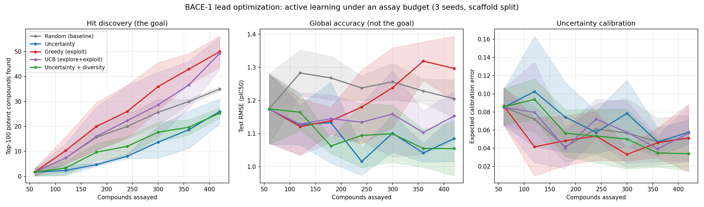

Case study: BACE-1 lead optimization
This page walks through examples/bace_lead_optimization.py, which asks a
concrete question: in a real lead optimization campaign, does active learning
actually pay for itself?
The short answer is that it depends entirely on what you measure. Active learning clearly wins at finding potent compounds, and clearly does not win at global predictive accuracy. Those are different objectives, and conflating them is the easiest way to conclude — wrongly — that active learning does not work.
The setup
Target. BACE-1 (β-secretase 1) is an aspartic protease that cleaves amyloid precursor protein, and one of the most heavily pursued Alzheimer's disease targets. The MoleculeNet BACE set contains 1,513 inhibitors with measured binding affinity, reported as pIC50 (higher = more potent).
Unlike a physicochemical benchmark such as ESOL, this is a genuine medicinal chemistry SAR series — dense analog families around a handful of chemotypes, which is what a project's compound pool actually looks like.
Split. Bemis–Murcko scaffold split, not a random split. The largest scaffold families go into the pool the campaign acquires from; the leftover rare and singleton chemotypes are held out. That gives 671 scaffolds → 1,213 pool / 300 held-out, with zero scaffold overlap. A random split on an SAR series would put near-identical analogs on both sides and badly overstate accuracy.
Campaign. 60 compounds assayed up front, then 6 rounds of 60 assays each — 420 assayed compounds out of 1,213, roughly a third of the pool.
Features. The "rich" 29-dimensional one-hot featurizer. This matters: with
the legacy 6-dimensional default the model barely beats predicting the mean, and
a model that barely beats the mean cannot rank compounds usefully.
Two protocol details that decide the answer
Both are easy to get wrong, and both flatter the results when you do.
Re-initialize the model every round. If you warm-start a single model across rounds at a fixed epoch count, by round 7 it has had seven times the gradient steps of round 1. The curve then improves partly because of extra training, not extra data, and you cannot tell the two apart. Every round here trains a fresh model for the same 300 epochs.
Fit label standardization on the labeled set only. Pool labels are precisely what the campaign has not measured yet. Standardizing against pool statistics leaks the answer into the experiment. The mean and standard deviation are refit from the assayed subset at the start of each round.
Acquisition strategies
| Strategy | Score | Intent |
|---|---|---|
| Random | — | Baseline |
| Uncertainty | predicted variance | Reduce model error |
| Greedy | predicted mean | Assay what looks most potent |
| UCB | mean + β·σ | Exploit, with an exploration bonus |
| Uncertainty + diversity | 0.7·variance + 0.3·Core-Set rank | Spread picks across the embedding space |
Note the uncertainty signal is the model's predicted variance head, not MC dropout. On this codebase MC-dropout variance is essentially uncorrelated with actual error (ESOL: r = −0.05), while the learned variance head carries real signal (r = +0.36). Using MC dropout here is a large part of why molax's own earlier benchmark made active learning look useless.
Results
After 420 assayed compounds out of 1,213 (3 seeds, mean ± sd):
| Strategy | Top-100 found | Enrichment | Test RMSE |
|---|---|---|---|
| Random (baseline) | 35.0 ± 1.0 | 1.00× | 1.206 ± 0.057 |
| Uncertainty | 26.0 ± 5.0 | 0.74× | 1.085 ± 0.070 |
| Greedy (exploit) | 50.0 ± 6.2 | 1.43× | 1.297 ± 0.098 |
| UCB (explore+exploit) | 49.3 ± 6.4 | 1.41× | 1.153 ± 0.075 |
| Uncertainty + diversity | 25.3 ± 2.1 | 0.72× | 1.055 ± 0.082 |
Read the two numeric columns against each other. They rank the strategies in almost exactly opposite order.
Run-to-run variation
jraph.segment_sum lowers to a scatter-add, which is not deterministic on
GPU, so fixed seeds do not give bit-identical results. An independent repeat
of this table gave greedy 48.0 (1.37×), UCB 51.7 (1.48×), random 35.0,
uncertainty 25.0 (0.71×). The ordering and the size of the gaps are stable;
the third decimal place is not.
Per-round numbers are written to
examples/assets/bace_lead_optimization.csv.

What this means
Exploitation finds hits. Greedy and UCB recover roughly 1.4× as many of the 100 most potent compounds as random sampling, for the same assay budget. Random finds 35; they find about 50. The gap is far larger than the spread across seeds, and it widens monotonically with budget — see the left panel.
Uncertainty sampling finds fewer hits than random. At 0.74× and 0.72×, both uncertainty-driven strategies are worse than picking at random at the thing a lead optimization campaign is trying to do. This is not a bug. Uncertainty sampling deliberately assays compounds the model finds confusing, and confusing compounds are usually not the potent ones.
And yet uncertainty sampling gives the best model. It also produces the lowest test RMSE (1.055 and 1.085, against 1.297 for greedy). It is doing exactly what it is designed to do — it is simply designed for a different objective.
So the answer to "does active learning work here?" depends entirely on the yardstick:
- Scored on hits found, active learning works, and exploitative acquisition wins by ~40%.
- Scored on global RMSE, the exploitative strategies are the worst of the five, and the honest answer would be that active learning barely helps.
Both statements come from the same run. This is why the earlier molax benchmark made active learning look useless: it measured only RMSE, on an acquisition signal (MC-dropout variance) that carried no information anyway.
A practical takeaway: if the campaign goal is finding potent compounds, start from an exploitative score and add exploration on top (UCB) rather than acquiring on uncertainty alone. If the goal is a reusable predictive model, invert that choice.
Reusing the protocol
The pieces are all library functions:
from molax import ATOM_FEATURIZERS, UncertaintyGCN, GCNConfig
from molax.acquisition import coreset_from_embeddings
from molax.metrics import evaluate_calibration
from molax.utils.data import smiles_to_jraph
graph = smiles_to_jraph(smiles, features="rich")
n_features = ATOM_FEATURIZERS["rich"].dim
coreset_from_embeddings is the index-based K-center greedy helper. Use it
rather than coreset_sampling when your molecules already live in one
pre-batched GraphsTuple driven by a boolean mask — re-batching the pool each
round changes array shapes and forces JIT recompilation, which is exactly what
the batch-once-then-mask pattern exists to avoid.